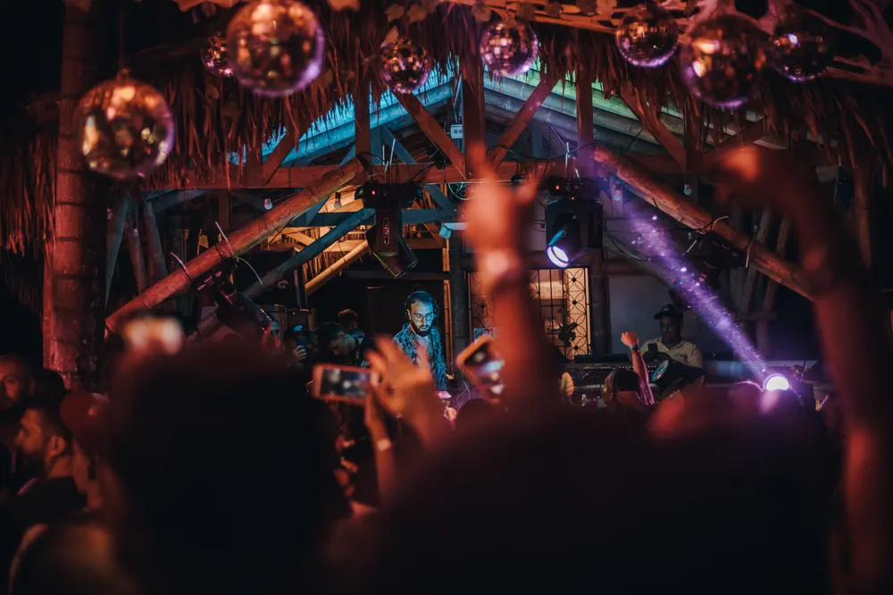

Eventos & clubs
Cobertura completa de la noche: cabina, pista, barra y backstage. La energía de la sala contada en fotos, no posadas.
Fotógrafo de eventos & artistas — Pereira / Barcelona
Cobertura de clubs, festivales, DJs y artistas. Cámara en mano, luz de sala, gente real.
"Empecé disparando conciertos en el Eje Cafetero. Hoy hago lo mismo en Barcelona: estar donde está la energía, con la cámara lista, esperando el instante exacto —el que dura un flash y se queda para siempre."
01 / Trabajo
Clubs, festivales, backstage y retrato de artista. Selección de sesiones recientes.
02 / Servicios
Cobertura completa de la noche: cabina, pista, barra y backstage. La energía de la sala contada en fotos, no posadas.
Retratos y material de prensa para lanzamientos, EPKs, portadas y redes. En estudio, en cabina o en directo.
Cobertura editorial multi-día: escenario principal, camerinos, producción y ambiente de público.
Selección editada y lista para Instagram y reels, entregada en 24–48h después del evento.

03 / Sobre mí
Soy Juan, fotógrafo nacido en Pereira. Ahí aprendí a disparar entre humo, luces de escenario y público que no se queda quieto: conciertos locales, ferias, fiestas de barrio. Esa escuela —rápida, en movimiento, sin segundas tomas— es la que uso hoy en Barcelona, cubriendo clubs, festivales y sesiones para artistas y sellos.
No busco la pose. Busco el segundo antes del drop, el gesto real detrás de la cabina, la cara de la pista cuando entra el bajo. Trabajo rápido, entrego rápido, y siempre pienso en cómo se va a ver esa foto en una portada, un EPK o un feed.
04 / Contacto
Cuéntame la fecha, el lugar y qué necesitas. Respondo rápido, sobre todo si es para esta semana.